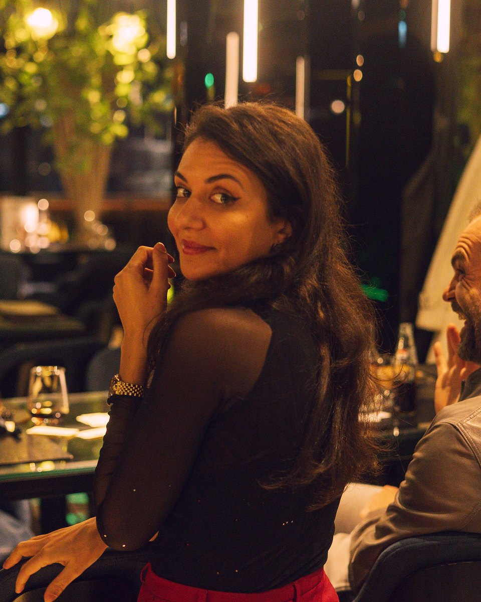
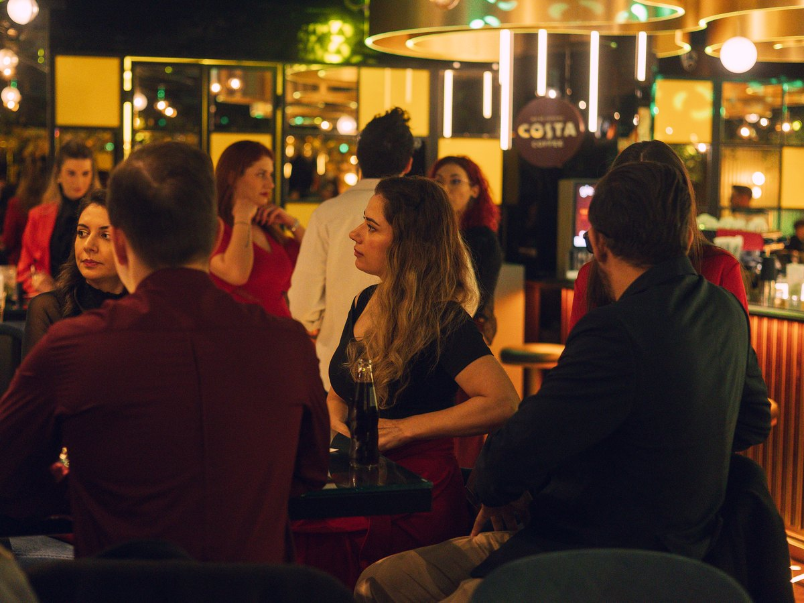
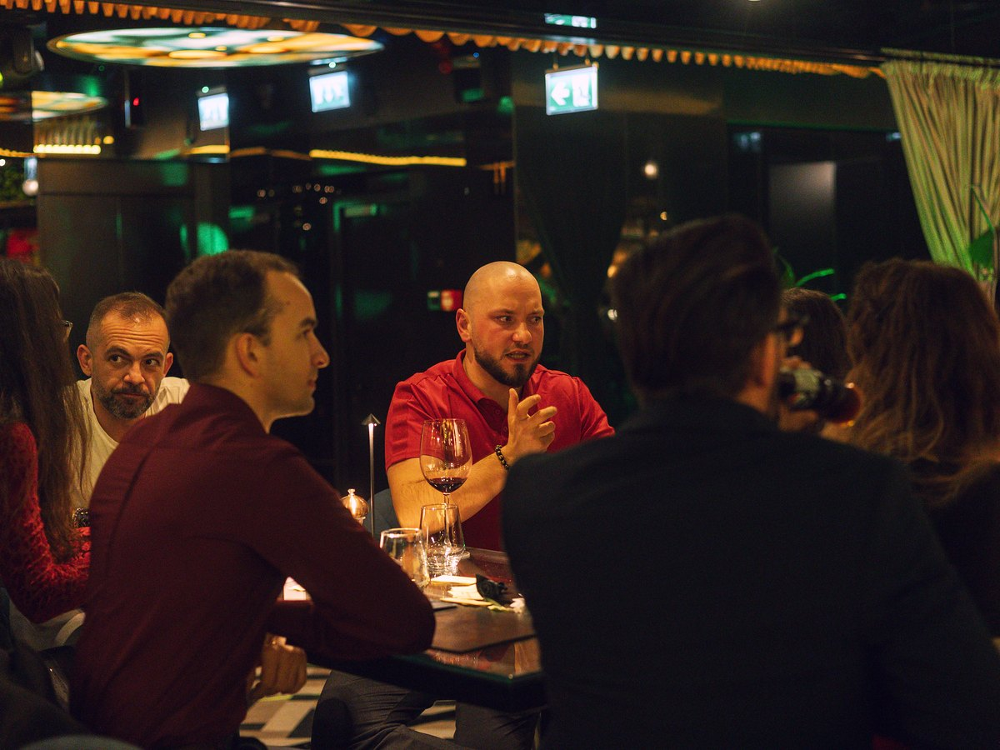
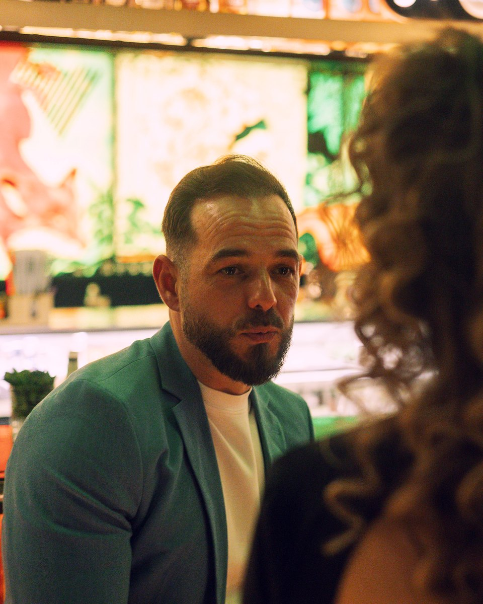

Green Flag / Red Flag
Un gest atent sau un motiv să ridici din sprâncene? Pornim de la situații concrete și vedem cum le interpretează fiecare.
O seară de socializare în care o întrebare bună poate schimba toată conversația.
Cunoști oameni noi, schimbi povești și descoperi cât de diferit putem vedea aceeași situație. Pregătim întrebările și câteva jocuri de conversație, iar tarotul adaugă un strop de mister întâlnirii.

Despre relații, lucrurile care ne atrag la cineva și alegerile pe care le facem. Despre ce considerăm firesc, ce ne pune pe gânduri și ce ne face să spunem „aici avem ceva de discutat”.
Unele subiecte stârnesc râsete. Altele te fac să asculți mai atent un om pe care abia l-ai cunoscut.

Un gest atent sau un motiv să ridici din sprâncene? Pornim de la situații concrete și vedem cum le interpretează fiecare.
Pare persoana ideală, dar apare un detaliu. Cât de mult contează? Răspunsurile sunt un bun motiv să vă cunoașteți mai bine.
Ce înseamnă pentru tine să primești atenție într-o relație? Povestim despre gesturi, așteptări și felul în care ne arătăm interesul.
Pe parcursul serii, întrebările pregătite de noi vă dau ocazia să intrați în vorbă și să descoperiți ce aveți în comun.
Într-un colț dedicat, poți adresa o întrebare și participa la o scurtă citire de tarot. Poate ai deja ceva în minte sau te interesează să încerci experiența pentru prima dată.

Albastrul închis dă tonul serii. Poți alege o ținută în această nuanță sau un accesoriu care o completează. Accentele aurii se potrivesc atmosferei.
Poți veni singur(ă) sau cu un prieten. Întâlnirea este deschisă femeilor și bărbaților care au chef să iasă, să povestească și să cunoască oameni noi.
Întrebările sunt un punct de pornire. Tu alegi cât vrei să împărtășești.




Fotografii de la edițiile anterioare.
Mi-a plăcut că nu a fost doar despre tarot. A fost mai degrabă o seară de conversații, socializare și atmosferă bună.
Colțul de tarot a fost partea mea preferată, dar sincer mi-au plăcut cel mai mult oamenii și discuțiile.
Am venit singură și nu m-am simțit deloc ciudat. Atmosfera a fost foarte relaxată și naturală.
Pregătim următoarea ediție. Lasă-ne datele și îți scriem primul când o anunțăm, înainte să punem biletele în vânzare.
Gata, ești pe listă! Îți scriem primul când anunțăm următoarea ediție.